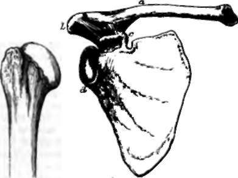

Chapter III. The Skeleton
Description
This section is from the book "Animal Physiology: The Structure And Functions Of The Human Body", by John Cleland. Also available from Amazon: Animal Physiology, the Structure and Functions of the Human Body.
Chapter III. The Skeleton
13. By the skeleton is meant the hard framework of the body. It consists of bones, cartilages, and ligaments.
What is called the backbone, or, more properly, the vertebral or spinal column, may be said to be the central part of the skeleton. It is composed of a series of bones called vertebræ, the fore parts or bodies of which, united by means of discs of flexible tissue, constitute a pillar of support, while what are termed the arches, lying behind this pillar, form a protective cylinder round the spinal cord, have spinous and transverse processes projecting from them, and glide one on another by joints. There are twenty-four of these movable vertebræ, the seven highest of which, belonging to the neck, are called cervical, while the following twelve carry ribs and are called dorsal, and the remaining five are termed lumbar. They are succeeded by the sacrum and coccyx, which form the lower part of the vertebral column, and will be further alluded to.
Springing from the dorsal portion of the vertebral column are twelve pairs of ribs, which are further prolonged in front by means of costal cartilages. The costal cartilages of the upper seven pairs of ribs are prolonged forwards to the breastbone or sternum, to be fitted into its sides; those of the succeeding five pairs are each fixed to the cartilage next above; while those of the eleventh and twelfth ribs are pointed, and terminate in the muscular wall of the abdomen. The circles formed by the ribs and parts with which they are connected are called costal arches, while the series of ribs and costal cartilages, together with the dorsal vertebræ and sternum, constitute the thorax of the skeleton.
14. Articulating with the upper end of the sternum, in the subject, are the collar bones or clavicles, which unite lders with the skeleton of the trunk. The clavicle has no existence in many mammals, such as the horse, the ox, and the sheep; while in others it is rudimentary and without function, as in the cat and the dog; and in all such instances the shoulder and fore limb are united to the rest of the skeleton by mere muscular connections; but in the animals in which it exists—for example, squirrels and monkeys—it is the fulcrum on which the arm moves when stretched out from the body or approached to the middle line. The outer end of the clavicle articulates with the scapula or shoulder-blade, and the two bones together form the shoulder-girdle.
Fig. 9. Vertebral column.
The joints at the outer and inner ends of the clavicles permit the shoulder-blades to be moved upwards, downwards, forwards, or backwards at will, while they continue to glide on the conical walls of the upper part of the chest. The part of the shoulder-blade with which the clavicle articulates is called the acromion, and is the expanded extremity of a spine which arises from the back of that bone, and is directed outwards and upwards. At a little distance from its outer end, the clavicle is likewise united by strong ligaments to another process of the shoulder-blade called the coracoid, against which it rests when the shoulders are pushed upwards.
The humerus or arm bone articulates by a rounded head with a surface of the scapula called the glenoid fossa, distinct from both acromion and coracoid processes, and this articulation is the shoulder It permits greater freedom of motion than any other joint in the body, owing to the smallness of the scapular surface, compared with the globular humeral surface, on which it moves, and the looseness of the ligamentous capsule which unites the two bones; but the coracoid and acromial processes overhang the joint sufficiently to add greatly to its strength; for it is against them that the humerus is in great measure pushed in all positions in which great pressure is made against it.
Fig. 10. Shoulder, a, clavicle; b, acromion; e, coracoid process; d, glenoid fossa of the scapula; e, humerus.
Fig. 11. Radius and Ulna, a, olecranon process of ulna; b, eoronoid process; c, orbicular ligament, embracing the head of the radius; d, triangular ligament, uniting the radius to the styloid process of the ulna.
In the forearm there are two bones named radius and ulna. The ulna, the inner of the two, is strong above and slender below, and admits of no movement save in a hinge fashion on the humerus, with which it articulates by means of a cavity which looks forwards, and is bounded below by the coronoid process, above by the olecranon or prominence of the elbow. The radius, which is much slenderer above than at its lower end, and supports the hand, is bound to the ulna at its upper end by an orbicular ligament, which permits it to rotate within its grasp, and is fastened to it below in such a way that it revolves round that bone as on a pivot, carrying with it the hand, and accomplishing pronation and supination, or the turning of the palm downwards and upwards.
The hand consists of eight little carpal bones arranged in two rows, five metacarpal bones, which form the skeleton of the palm, and the phalanges or finger bones, of which the thumb has two, and the other digits three each.
The bones of the upper row of the carpus are named— beginning at the outer or thumb side — the scaphoid, semilunar, and cuneiform bones, and the pisiform, smaller than these, and articulated in front of the cuneiform. The bones of the second row are called trapezium, trapezoid, 08 magnum, and unciform, the unciform supporting the metacarpal bones of the ring and little fingers, and the others supporting one metacarpal bone each.
The movements of the wrist are accomplished partly by movement of the upper row of carpal bones on the radius, and partly by one row of carpal bones moving on the other. There is little perceptible movement allowed between the carpal bones of the second row; but it is not without importance that they are separate bones; for when we lean or push with the palm, and the wrist is over-extended, the members of this range, as well as the metacarpal hones, present the concavity of an arch towards the object pressed on, and have the ligaments which support them in that position thrown into a state of tension, which, being recovered from as soon as the pressure is removed, gives elasticity to the movements of the limb. The utility of the hand depends in great measure on the opposability of the thumb to the other digits, and this results from freedom of movement between the trapezium and first metacarpal bone, and from the number of muscles attached to the thumb.

Fig. 12. Front View or the Bones of the Hand, a, trapezium; b, scaphoid, and, beneath it, the trapezoid; c, semilunar, and, beneath it, os magnum; d, pisiform; e, cuneiform; f, unciform.
Continue to: